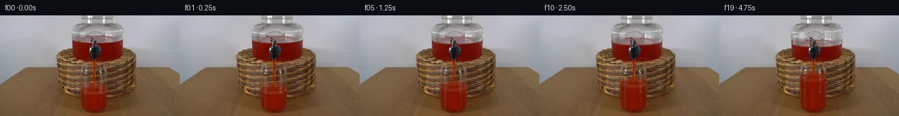

![首帧]()

Round 00
2026-11-05T02:38:19.200370+00:00像素候选变化代码 +312/−0inspection 更新
pixels 11f29f67633a04b1 · code c0c25a47e082255a
查看本轮 generate.py 真实 diff
--- previous/generate.py
+++ current/generate.py
@@ -0,0 +1,312 @@
+"""Deterministic local pixel continuation of the supplied dispenser photograph.
+
+Only first_frame.png supplies image content. The moving menisci are source-image
+texture warps; stream modulation and small ripples are mathematical pixel layers.
+No image outputs are visually inspected by this script or its author.
+"""
+from pathlib import Path
+import base64
+import hashlib
+import json
+import re
+
+import numpy as np
+from PIL import Image, ImageDraw
+from scipy.ndimage import map_coordinates, median_filter
+
+from artifact_io import save
+
+ROOT = Path(__file__).resolve().parent
+W, H, N, FPS, SS = 256, 144, 20, 4, 4
+INITIAL_SURFACE = 105.0
+FINAL_RISE = 19.0
+GLASS_X = 133.8
+GLASS_R = 19.3
+ELLIPSE_RY = 6.2
+AREA_RATIO = (19.4 / 35.4) ** 2
+
+
+def smoothstep(a):
+ a = np.clip(a, 0.0, 1.0)
+ return a * a * (3.0 - 2.0 * a)
+
+
+def sample(a, yy, xx):
+ if a.ndim == 2:
+ return map_coordinates(a, [yy, xx], order=1, mode="nearest", prefilter=False)
+ return np.stack([
+ map_coordinates(a[..., c], [yy, xx], order=1, mode="nearest", prefilter=False)
+ for c in range(a.shape[-1])
+ ], axis=-1)
+
+
+def reduce_ss(a):
+ return a.reshape(H, SS, W, SS, -1).mean(axis=(1, 3))
+
+
+def make_faucet_mask():
+ # Pixel extents measured on the source; keep the hardware exact, including
+ # its antialiased outline. The source animation never extends below y=53.
+ a = np.zeros((H, W), dtype=bool)
+ spans = {
+ 31: (129, 131), 32: (128, 132), 33: (128, 133),
+ 34: (128, 135), 35: (129, 136), 36: (129, 137),
+ 37: (131, 137), 38: (132, 137), 39: (131, 138),
+ 40: (131, 138), 41: (131, 137), 42: (131, 137),
+ 43: (131, 140), 44: (129, 141), 45: (128, 142),
+ 46: (127, 143),
+ }
+ for y, (left, right) in spans.items():
+ a[y, left:right + 1] = True
+ for y in range(47, 64):
+ a[y, 125:145] = True
+ return a
+
+
+def build_frames():
+ original = np.array(Image.open(ROOT / "first_frame.png").convert("RGB"))
+ assert original.shape == (H, W, 3)
+ base = original.astype(np.float32)
+ # Repeat the original pixel in each subpixel. Unedited regions therefore
+ # remain bit exact after integration; interpolation is restricted to fluid.
+ base_ss = np.repeat(np.repeat(base, SS, axis=0), SS, axis=1)
+ yy, xx = np.meshgrid(
+ (np.arange(H * SS, dtype=np.float32) + 0.5) / SS - 0.5,
+ (np.arange(W * SS, dtype=np.float32) + 0.5) / SS - 0.5,
+ indexing="ij",
+ )
+ faucet = make_faucet_mask()
+ faucet_ss = np.repeat(np.repeat(faucet, SS, 0), SS, 1)
+
+ # Separate narrow achromatic glass glints from transmitted liquid texture.
+ # Put these glints back at their original locations after moving the fluid.
+ neutral = np.minimum(base[..., 1], base[..., 2])
+ reflection = np.maximum(neutral - median_filter(neutral, size=(1, 9)), 0.0)
+ stripe = np.zeros((H, W), dtype=np.float32)
+ x_native = np.arange(W, dtype=np.float32)[None, :]
+ for x, width in [(115.2, .8), (121.8, 1.3), (143.0, 1.2), (151.2, .8)]:
… diff truncated; 225 more lines …